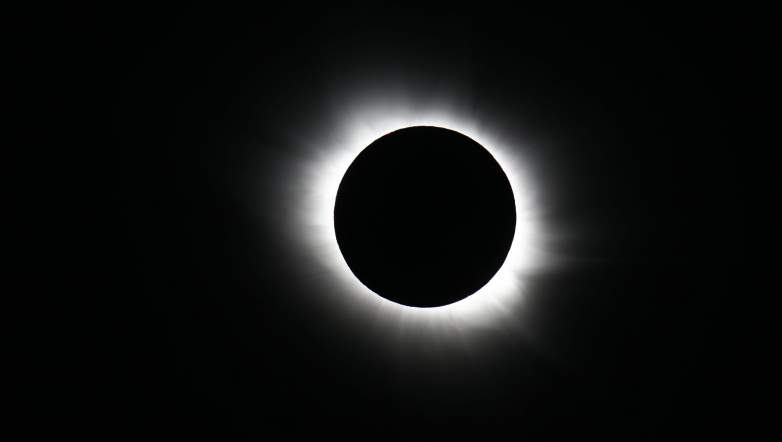

Tamsa – šviesos nebuvimas. Fizikoje gali egzistuoti tik sumažintas šviesos kiekis. Emocinis atsakas į tamsą lėmė jos simbolizmą literatūroje, mene, kultūroje.
Fizikoje tamsą lemia itin mažas regimųjų dažnių fotonų skaičius, mažesnis už kritinį žmogaus akies jautrį. Aplinka gali būti tamsi tik nesant regimosios šviesos šaltinių arba esant visiškai juodų kūnų aplinkai. Pastaruoju atveju visiškai juodi kūnai sugeria regimojo diapazono fotonus, paverčia juos šiluma (fononais) bei perspinduliuoja infraraudonus fotonus.
Placiau